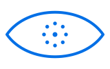

Observed
0 / 30 min
Your chosen goal
Building your baseline
Blink, then look away.
Let your eyes lead the pace.
Optional camera feedback. Every reset works without it.
Let the drawing follow your blinks.
Blink naturally. A detected blink will appear here.
0 / 30 min
Your chosen goal0 / 3 days
Last seven calendar days0 resets
Goal 1 resetCamera states and missing time appear here as observations arrive.
Detected bilateral episodes reopen within 1.2 seconds. Longer episodes and single eye closures stay separate. Reset counts record timed guidance, not a clinical result.
Quiet invitations, with Later and Skip. Sleep, lock and idle time do not queue breaks.
Time is measured today. Days use the last seven calendar days.
AC starts monitoring. Battery stops the app and camera. Pause releases the camera for five minutes.
Detection alerts wait two seconds. Sound is optional, with at least thirty seconds between detection pings.
One visible person per session. A second measurable face pauses observation. Losing the face clears calibration. No face recognition or inferred identity.
Tracking stays local. Camera frames and landmarks remain in memory; only daily activity totals are saved.
Eye check results disappear when the app closes. No raw scan, image or individual blink timestamp is saved or uploaded.
Checking the camera
Waiting for a camera sample
Keep both eyes visible and face the camera. This guide checks measurement conditions; it does not score eye health.
Landmarks describe the visible eyelid outline. This model illustrates the eye’s interior; it does not contain measurements from you.
Retinal imaging, eye pressure and visual acuity need an eye examination. This camera does not measure them.
A webcam observation, not a medical examination. Opening differences describe measured movement, not eye size or a diagnosis.
Actual eyelid landmarks, corrected for face proportions.
Each eye is normalized against its own open eye calibration. Movement difference compares those normalized values, not anatomical eye size. Confidence is Vision’s face observation score, not a measured accuracy percentage. Closed eye share is sampled camera time, not a medical assessment.
rotated height / width80th percentile, each eyeα = 1 − exp(−Δt / 0.025)52% / 68%Calibration needs 18 valid samples and 1.2s of visible data. Principal axes compensate for head roll; pixel scaling compensates for the face crop.
Newest capture → Vision landmarks → Rust geometry → native reminder. Frames older than 250ms are rejected. Display refresh is separate from inference.
Violet marks relative opening. Teal marks observed rhythm and time.
These are interface colors. This webcam mode does not measure iris coloration or retinal data.